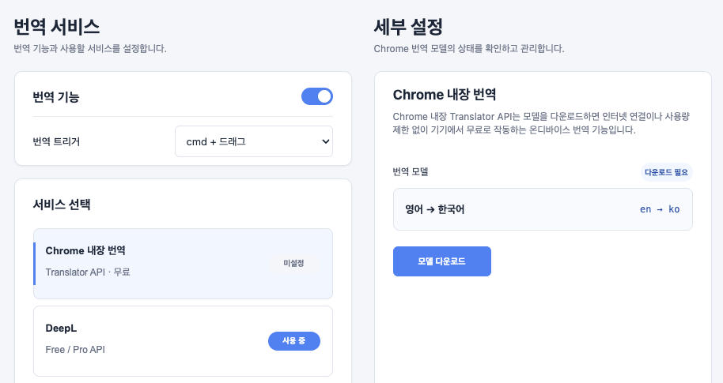
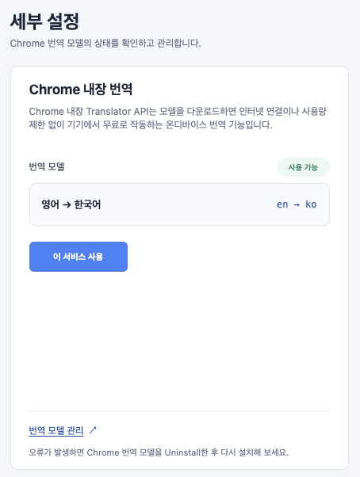
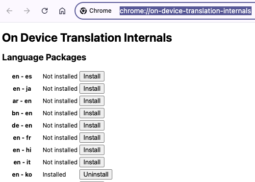

네이버 영어사전 크롬 확장프로그램
Chrome 내장 번역
설정하기

NaverDic 7.0은 Chrome 내장 번역, DeepL, Gemini를 문장 번역 서비스로 지원합니다. 이 문서에서는 Chrome 내장 번역을 설정하는 방법을 안내합니다.
Chrome 내장 Translator API는 번역 모델을 다운로드하면 인터넷 연결이나 사용량 제한 없이 기기에서 무료로 작동하는 온디바이스 번역 기능입니다.
설정 방법
- 설정 페이지의 번역 서비스에서 Chrome 내장 번역을 선택한 뒤 모델 다운로드를 누릅니다.

- 다운로드가 완료되면 이 서비스 사용을 누릅니다.

- 설정을 저장한 뒤 사용하면 됩니다.
문제가 발생할 경우 번역 모델 관리 링크를 눌러 en-ko 패키지를 Uninstall한 후 다시 Install해 보세요.
